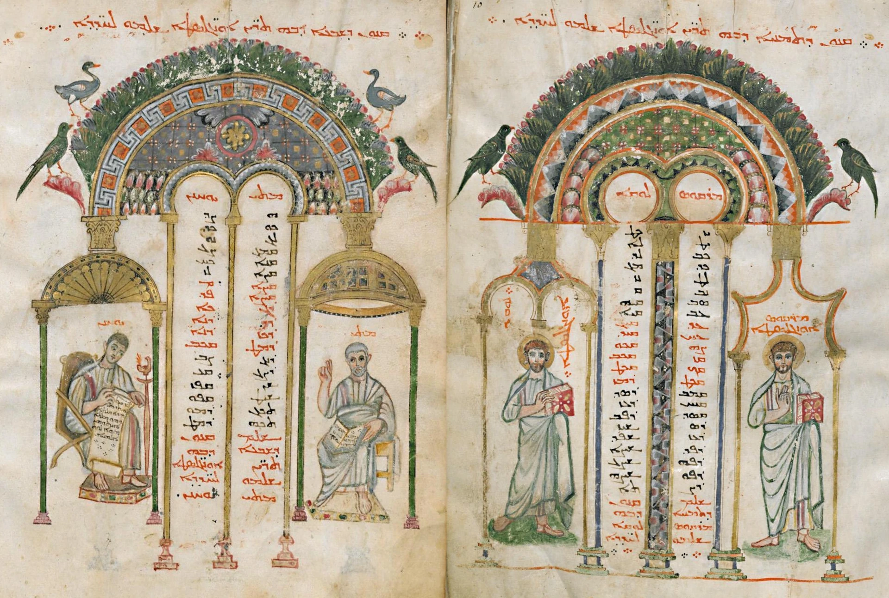
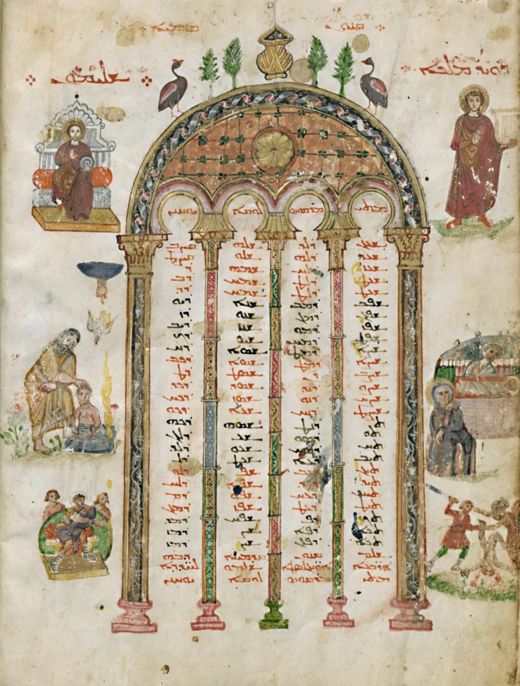
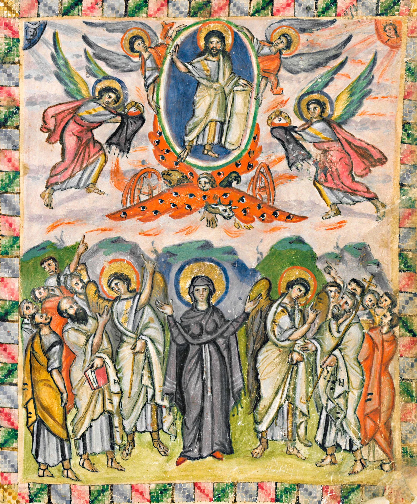
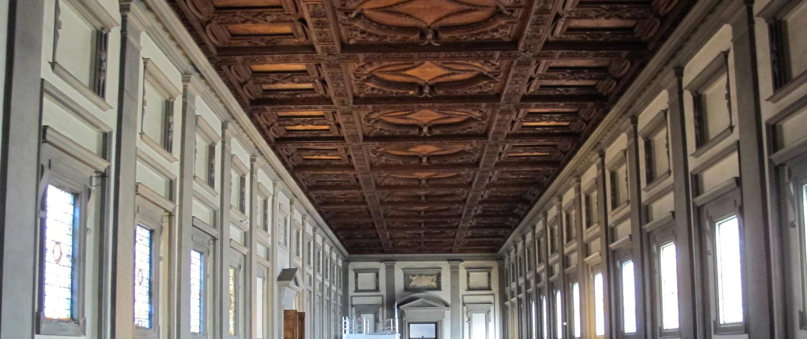

아직 펼치지 않은 카드성경을 위해 만든 글자 · 4라불라 복음서1,400년도 더 전에 한 필사자가 시리아어로 네 복음서를 베껴 썼어요. 그 책에는 어떤 그림들이 들어 있을까요?아주 옛날 책에 새와 사람 그림이 있어! 누굴까?
586년 2월시리아 · 자그바의 성 요한 수도원 → 오늘 이탈리아 피렌체
라불라 복음서
586년 2월 보름, 시리아의 한 수도원에서 필사자 라불라가 네 복음서를 다 베껴 쓰고 마지막 쪽에 자기 이름을 적었어요. 이 책 앞쪽에는 사본에 남은 가장 오래된 십자가 그림으로 꼽히는 쪽이 있어요. 그 한 쪽에 숨은 작은 것들을 하나씩 눌러 찾아보세요.
아주 옛날 한 사람이 손으로 쓴 성경책에 그림이 가득해. 그림 속 작은 것들을 같이 찾아보자!
검수 전 시안이에요(기준서 1판). 장면에는 기록에 있는 것만 옮겼고, 학자마다 다른 점은 그렇다고 밝혔어요. 상상은 ‘눈 감고 상상해 보기’에만 썼어요.
시안 확인용카드 단계 미리 보기
1
보름달 뜬 날의 끝맺음
586년 2월, 시리아의 자그바에 있던 성 요한 수도원이에요. 한 필사자가 네 복음서를 시리아어로 다 베껴 쓰고, 맨 끝 쪽에 몇 줄을 더 적었어요. 이런 글을 ‘끝맺음 글’이라고 해요.
그는 날짜를 쉐바트 달(2월쯤) 보름이라고 적었어요. 586년이에요. 이어서 자기 이름을 아주 낮춰서 남겼어요.
“낮고 보잘것없는 라불라, 이 책을 쓴 필사자를 위해 기도해 주세요.”
라불라의 끝맺음 글 가운데서(영어 번역을 이 안내서가 줄여 옮김)
끝맺음 글에는 수도원장 세르기우스와 수사·부제들의 이름도 나와요. 글이 있든 없든 한 장이라도 잘라 가는 사람은 “성소를 턴 도둑들 가운데” 들게 하라는 엄한 말도 있어요. 그림을 그린 사람의 이름은 적히지 않았어요.
586년 2월 보름, 라불라가 맨 끝 쪽에 몇 줄을 더 쓴다면 무엇을 적었을까요?
책을 다 쓴 날, 필사자가 마지막 쪽에 날짜와 자기 이름을 적었대.
물어보기책을 다 만들었다면, 너는 마지막 쪽에 무엇을 쓰고 싶어?
2
같은 이야기를 찾는 표
책 앞쪽에는 아치로 꾸민 숫자 표가 스무 쪽 가까이 이어져요. 4세기 학자 에우세비오스가 다듬은 ‘복음서 대조표’예요. 같은 이야기가 네 복음서의 어디에 있는지 번호로 맞대어 보게 해 줘요.
라불라 복음서의 대조표 둘레에는 작은 그림이 있어요. 위에는 이름을 적은 구약의 인물, 가운데에는 예수의 이야기예요. 이 쪽(4v)에는 솔로몬과 다윗, 예수의 세례와 탄생 같은 장면이 들어 있어요.

숫자 표 둘레에 새랑 사람들이 그려져 있어. 같은 이야기를 찾게 도와주는 표래.
물어보기아치 위에 앉은 새 두 마리를 찾을 수 있어?
3
한 쪽에 담긴 사흘
책장을 넘기면 한 쪽이 위아래 두 칸으로 나뉜 그림이 나와요. 위 칸에는 십자가, 아래 칸에는 빈 무덤과 다시 만난 예수가 있어요.
그림이 든 사본에 남은 십자가 그림 가운데 가장 오래된 것으로 꼽혀요. 그림 속 작은 것들을 하나씩 눌러 보세요.
그림 속 작은 것들을 하나씩 눌러 보세요. ‘가까이 보기’로 크게 볼 수 있어요.

13r쪽. 위 칸에는 십자가, 아래 칸에는 빈 무덤과 다시 만난 예수 · 「라불라 복음서」 13r쪽 · 메디치 라우렌치아나 도서관 Plut. I, 56 · 퍼블릭 도메인 · 위키미디어 공용
그림 위의 숫자나 아래 번호를 눌러 보세요.
한 쪽 안에 금요일의 십자가와 일요일 아침의 빈 무덤이 함께 들어 있어요.
위에는 십자가가 있고, 아래에는 텅 빈 무덤이 있어.
물어보기그림 맨 위에서 둥근 해와 달을 찾을 수 있어?
4
하늘로 오르는 예수
다음 쪽(13v)에는 예수가 하늘로 오르는 장면이 있어요. 둥근 빛 테두리에 싸인 예수를 위쪽의 두 천사가 붙들고, 양옆의 두 천사는 천으로 감싼 손에 관을 들고 다가와요.
그 아래에는 눈이 가득한 붉은 날개와 바퀴, 사람·사자·독수리·소의 얼굴이 있어요. 예언자 에스겔이 본 환상(에스겔 1장)을 빌려 그렸어요.
아래 한가운데에는 마리아가 두 손을 들고 서 있어요. 사도행전은 흰옷 입은 두 사람이 하늘을 올려다보는 제자들에게 말을 건넸다고 전해요(사도행전 1장 10~11절). 이 그림은 그 두 사람을 날개 달린 천사로 그렸어요.

예수님이 하늘로 올라가고, 사람들이 위를 올려다봐.
물어보기붉은 날개에 그려진 눈을 같이 세어 볼까?
5
레바논을 거쳐 피렌체로
책은 시리아를 떠나 레바논 산골의 수도원들로 갔어요. 1361년에는 카누빈 수도원에 있었고, 그곳에서 적어도 두 세기 동안 지켰어요. 중세에는 마론파(레바논의 동방 가톨릭 교회) 총대주교들의 일을 적어 두는 기록장으로도 쓰였어요.
15세기 끝 무렵이나 16세기에 책은 이탈리아 피렌체의 메디치 라우렌치아나 도서관으로 왔어요. 지금도 그곳에서 ‘Plut. I, 56’이라는 번호로 지켜요.

이 책은 여러 나라를 지나서 지금은 이탈리아의 오래된 도서관에 있어.
물어보기1,400년 동안 이 책을 지킨 사람들은 누구였을까?
눈 감고 상상해 보기
돌로 지은 수도원의 작은 방이에요. 창밖으로 보름달이 떠 있어요. 등잔 기름 냄새 속에서 갈대 펜이 양피지를 긁는 소리만 들려요. 마지막 줄을 다 쓴 필사자가 잠시 펜을 내려놓아요. 이 책은 어디까지 가게 될까요?
눈을 감아 봐. 조용한 밤, 창밖에 둥근 달이 떠 있어. 사각사각 펜 소리가 들려. 마지막 줄을 다 쓰면 무슨 말을 적을까?
나의 자리
같은 이야기를 네 사람이 저마다 다르게 전했어요. 내 삶의 한 장면을 다른 사람들은 어떻게 기억할까요?
같은 일을 친구와 나는 어떻게 다르게 기억할까?
마음에 닿는 한 줄을 고르거나 직접 써 보세요. 한 줄을 남기면 이 자리의 도장이 찍혀요. 이 기기에만 저장돼요.
더 깊이
궁금한 칸만 펼쳐 읽어도 괜찮아요.
알고 보면
시리아어 예수가 쓰던 아람어의 한 갈래예요. 이 책은 시리아 교회가 쓰던 복음서 번역(페시타)을 옮겨 적었어요.
복음서 대조표 알렉산드리아의 암모니오스가 시작하고 4세기 에우세비오스가 다듬었어요. 이야기마다 번호를 붙이고, 열 개의 표에 ‘몇 복음서가 같은 이야기를 하는지’ 모았어요. 에우세비오스가 쓴 설명 편지(카르피아노스에게 보낸 편지)도 이 책 2v~3r쪽에 있어요.
그림 쪽 책 맨 앞 열네 장(1r~14v)이 그림 쪽이에요. 마티아를 뽑는 장면, 아기 예수를 안은 마리아, 암모니오스와 에우세비오스, 대조표, 그리고 십자가와 부활·승천·옥좌의 그리스도·성령 강림이 있어요.
자그바 끝맺음 글은 ‘베트 자그바의 성 요한 수도원’이라고 적었어요. 오늘날 시리아 아파메아 북쪽 약 50km, 제벨 리하 언덕 지대로 짐작해요.
기록마다 다른 점
그림은 처음부터 이 책의 것이었을까 1973년 라이트(D. H. Wright)는 그림 쪽도 586년에 이 책과 함께 만들었다고 결론지었어요. 2008년 보르보네와 멘고치는 1460~1461년에 두 사제가 카누빈 수도원에 ‘큰 묶음’을 바쳤다는 메모를 근거로, 그림 묶음이 15세기에야 이 책과 합쳐졌다고 보았어요. 다만 그 읽기는 아직 널리 받아들여지지 않았고, 그림은 6세기 것으로 봐요.
덧칠 그림 일부는 뒷날 고친 사람들이 덧칠했어요. 지금 보이는 색과 얼굴이 모두 처음 그대로는 아니에요.
쪽 번호 자료에 따라 앞면·뒷면을 a·b로, 또는 r·v로 적어요. 13r = 13a예요. 끝맺음 글의 쪽도 291쪽(푸를라니), 292쪽(GEDSH)으로 자료마다 달라요.
그림과 함께 읽는 말씀
말씀은 뜻만 옮기고, 본문은 대한성서공회 개역개정으로 이어 드려요.
요한복음 19장 군인들이 옷을 나누고, 한 군인이 창으로 옆구리를 찔러요.
마태복음 28장 1~10절 무덤을 지키던 이들이 떨며 쓰러지고, 여인들이 다시 살아난 예수를 만나 그 발을 붙잡아요.
사도행전 1장 9~11절 예수가 하늘로 올라가고, 흰옷 입은 두 사람이 제자들에게 말해요.
직접 가 보기
확인한 날 · 2026년 11월 18일 · 바뀌기 쉬운 정보라 정기적으로 다시 확인해요
책은 이탈리아 피렌체의 메디치 라우렌치아나 도서관에 있어요. 실물을 언제 보여 주는지는 도서관에 미리 물어보세요.
1959년에 그림 쪽을 똑같이 찍어 만든 책(영인본)이 나왔어요. 큰 도서관에서 찾아볼 수 있어요.
그림 속 여섯 곳 금박
13r쪽 그림 속 작은 것 여섯 곳을 모두 찾아 읽으면 카드에 금박이 입혀져요.
그림 속 여섯 곳을 모두 찾아 읽기
필사자의 자리에서 채색
둘 가운데 하나만 해도 카드가 채색돼요.
필사자 라불라의 자리에서 끝맺음 글에 적을 것 고르기
아이와 함께 ‘영화처럼 보기’를 끝까지 보기
근거 보기 (10)
- Syriac Orthodox Resources: The Manuscript of Rabbula(푸를라니·체켈리 해설) — 끝맺음 글(그리스력 897년=586년 쉐바트 달 보름, 291a쪽, 베트 마르 요하난 자그바, ‘낮고 보잘것없는 라불라’, 수도원장 세르기우스와 수사·부제, 기도 부탁, 한 장이라도 잘라 가는 이에 대한 말), 2a쪽 에우세비오스와 암모니오스, 2b~3a쪽 카르피아노스에게 보낸 편지, 열 개의 대조표와 그 유래, 4b쪽 솔로몬·다윗·세례·탄생, 1361년 카누빈, 15세기 끝~16세기 초 피렌체
- Gorgias Encyclopedic Dictionary of the Syriac Heritage(Lucas Van Rompay): Rabbula Gospels — 그림 쪽 1r~14v, 끝맺음 글 292r~v(그림 그린 이는 이름이 없음), 자그바는 아파메아 북쪽 약 50km 제벨 리하로 추정, 라이트 1973과 보르보네·멘고치 2008의 논의, 카누빈에서 적어도 두 세기, 대조표의 위(구약 인물)·가운데(신약 장면) 그림
- Wikipedia: Rabbula Gospels — 사본에 남은 가장 오래된 십자가 그림, 대조표 3b~12b, 중세에 마론파 총대주교들의 기록장으로 쓰임, 뒷날의 덧칠, 지금 크기 34×27cm, Plut. I, 56(길잡이로만)
- Christian Iconography(Richard Stracke): The Crucifixion and Resurrection, Rabbula Gospels — 콜로비움, LOGINOS 글자, 해면, 옷을 나누는 군인, 마리아와 요한, 에디큘라를 본뜬 무덤, 쓰러진 경비병, 발을 붙잡은 여인들
- Harvard HAA Image Hosting: Scene of the Crucifixion from the Rabbula Gospels — 두 강도 사이의 예수, 이름이 적힌 롱기누스, 해면, 제비뽑기, 마리아와 요한, 오른쪽의 여인들
- Christian Iconography: The Ascension of Christ, Rabbula Gospels — 네 천사와 빛 테두리, 에스겔 1장의 모습, 날개의 눈(요한계시록 4:6), 마리아와 제자들
- Art & Theology(2016): Christ ascending into Ezekiel’s vision — 천사들이 빛 테두리를 받쳐 올림, 두 천사가 감싼 손으로 금관을 바침, 네 얼굴·바퀴·손(에스겔 1장), 가운데의 마리아가 두 손을 든 모습, 흰옷의 두 사람을 천사로 그림
- Index of Medieval Art(프린스턴): The Iconography of Darkness at the Crucifixion — 라불라 복음서의 십자가 그림에 반쯤 가려진 해와 얼굴이 있는 달, 밝은 하늘
- Wikipedia: Laurentian Library — 미켈란젤로가 설계한 도서관, 1571년에 문을 엶(길잡이로만)
- 위키미디어 공용: 9v·10r, 4v, 13r, 13v쪽과 라우렌치아나 열람실 사진 정보
그림·사진·소리 출처
‘처음 만나는 기독교 문화’의 깊은 카드예요. 카드 단계와 남긴 글은 이 기기에만 저장돼요.